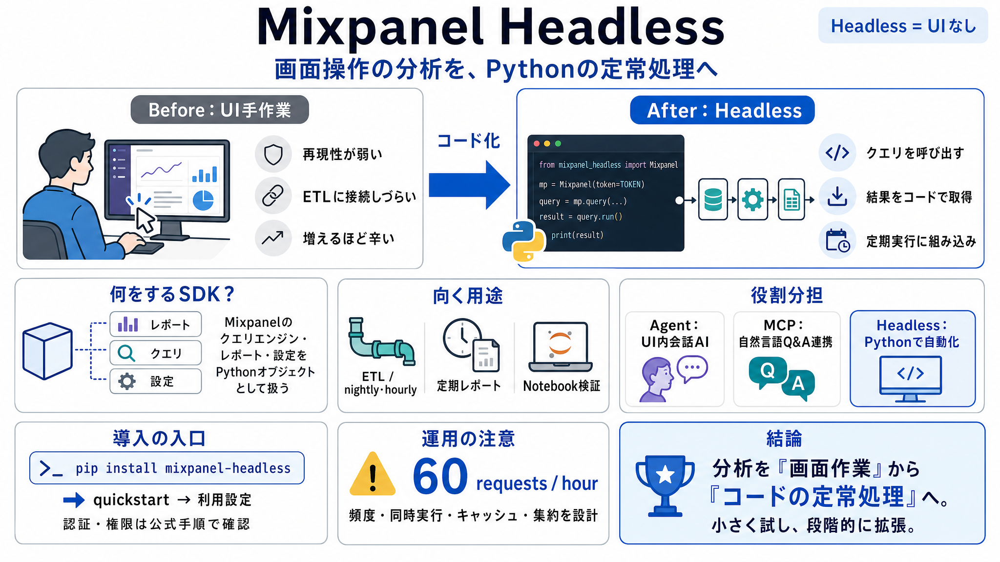

Headless Analytics API & SDK | Mixpanel
Introducing your always-on product intelligence system. # Product intelligence, built for agents and developers. Headles…

Mixpanelの分析機能を、Pythonから“プログラムとして”呼び出すためのオープンソースSDKです。
（Headless＝UIなし）
定期実行 / ETL / ノートブック / 解析パイプラインの開発者
画面操作の分析を、コードの定常処理として再現
UIでの分析は再現性が弱く、定期実行やデータ基盤への組み込みが難しくなります。
結果として、意思決定の速度と一貫性が下がります。
毎回の操作差が混ざる
スケジューラ / ETL に接続しづらい
利用量が増えるほど回し続けるのが辛い
Headlessは、Mixpanelのクエリエンジン・レポート種類・設定を、単一のPythonオブジェクトとして露出します。
個別APIを寄せ集めるより、統一インターフェースで分析・取得ができます。
分析対象 / レポート定義 / クエリ条件
レポート結果（コードで扱える形）
UIでやっている分析の流れを、ブラウザなしで“呼び出し”として扱えるようにするのがHeadlessの狙いです。
定期バッチやETLに、そのまま組み込めます。（自動化 / automation）
人がクリックして結果を見る
コードがクエリして結果を取得する
Headlessは、コーディングエージェントや開発者向けに“コードからMixpanel機能を操作する”入口になります。
パイプラインに組み込む（nightly / hourly 等）
毎時・毎日で自動取得
Notebookで再現可能に分析
UI内会話AIの「Mixpanel Agent」と、自然言語Q&A連携の「MCP Server」は“体験”寄り、Headlessは“開発者の自動化”寄りです。
会話型AI（UI）
自然言語でデータ連携
Pythonで自動化（SDK）
入力データでは「full Mixpanel platform（完全なMixpanelプラットフォーム）」として、クエリエンジン・レポートタイプ・設定を単一オブジェクトで扱える趣旨が書かれています。
ただし“どこまでが実装可能か”は公式で要確認です。
対応レポート/粒度/API範囲は別途確認が必要
狙うユースケースを先に照合する
最短手順は、まず `pip install mixpanel-headless` を行い、その後にGitHubのquickstartを参照する流れです。
そこからレポート／クエリの定義と権限設定へ進みます。
pip install mixpanel-headless
GitHub quickstart → 利用設定
デフォルトのAPI制限は「1時間あたり60リクエスト」です。
自動化を入れるとリクエストが増えやすく、設計次第で制限に抵触します。
60 requests / hour
ジョブ頻度・同時実行・キャッシュ・集約を設計
高ボリューム運用では、早期アクセス（増枠申請）を検討すべきだという示唆があります。
特に複数レポートを短時間に取得する設計は注意です。
短時間にリクエストが山積みになる
処理が止まる/遅延する可能性
小さく試し、段階的に拡張
この入力データは位置づけと数値（60 req/hr）は明確ですが、権限・認証・運用設計の具体は省略されています。
公式で埋めて判断するのが安全です。
Pythonオブジェクト化 → notebook/ETLへ接続しやすい（integration）
認証・権限・リトライ/キャッシュ/ガバナンス確認が必要（security）
Mixpanel Headlessは、分析を“画面作業”から“コードの定常処理”へ落とし込むための基盤です。
ただし運用は60 req/hrを前提に設計し、権限・認証は公式で埋めるのが現実的です。
Agent/MCP/Headlessの棲み分け
頻度・集約・キャッシュで上限に合わせる
小さく試し、段階的に拡張
Introducing your always-on product intelligence system. # Product intelligence, built for agents and developers. Headles…
Mixpanel Headless is a full Python SDK for Mixpanel itself that makes it possible to read and drive everything in the pr…
Headless is an open-source SDK that exposes the full Mixpanel platform — every query engine, report type, and configurat…
Product Analytics and the data warehouse: A long road to a perfect pairing. After 10 years of turning knobs in Mixpanel,…
This guide provides a practical, end-to-end approach to implementing Mixpanel's Python SDK for server-side tracking and …